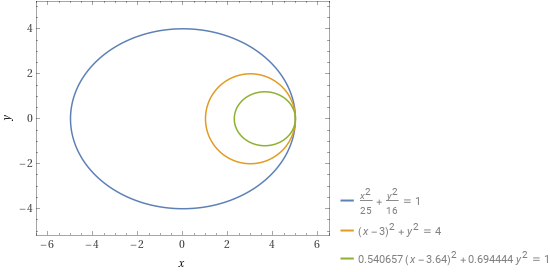
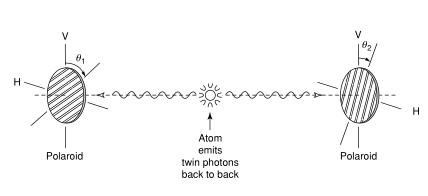

TEMPO DI UCCIDERE – ENNIO FLAIANO
Il senso di questo romanzo sta nella sua genesi: Longanesi chiese a Flaiano di scrivere un romanzo in tre mesi e Flaiano, preso in contropiede, non avendo niente di pronto, scrisse questo testo.
Qui Flaiano non ha una storia da raccontare o un messaggio da divulgare: deve solo far passare il tempo al lettore. Ci prova raccontando una non storia, una specie di sogno, in cui le persone e i fatti, che in sé non hanno alcuna importanza, sono evanescenti, ambigui, onirici. Il senso del libro è tutto nelle battute e nelle trovate dialettiche di Flaiano per riuscire a essere sorprendente, divertente, il meno noioso possibile.
Un esercizio non facile riuscito solo parzialmente.
CRONACA FAMILIARE - VASCO PRATOLINI
La storia del rapporto fra l’autore e il fratello, separati alla nascita per la morte della madre, educati in modi opposti, e riunitisi alla fine dell’adolescenza.
Bello, commovente, vero. Azzeccato lo stile piano e lineare del racconto: i fatti parlano da soli.
OCEANO MARE – ALESSANDRO BARICCO
Baricco scrive bene, ma purtroppo non ha nulla da dire. In questo romanzo narra le vicende di alcuni tipi strani, ospiti di un albergo in riva al mare. Sono situazioni costruite, fittizie, in cui Baricco cerca di essere divertente o profondo costruendo intrecci improbabili o sorprendenti, ma che in realtà non comunicano alcuna emozione.
LETTERA AD UN BAMBINO MAI NATO - ORIANA FALLACI
Il libro parla delle speranze e dei dubbi di una donna incinta, simulando un dialogo col bambino che le cresce in pancia. L'idea letterariamente è buona, ma purtroppo la Fallaci non riesce ad andare oltre una serie di luoghi comuni e stereotipi, che non lascia il segno nell’animo del lettore.
LE NOZZE DI CADMO E ARMONIA - ROBERTO CALASSO
I miti greci sono storie religiose o epiche che si sono formate, ramificate, sedimentate nei secoli, e una stessa storia presenta versioni diverse l’una dall’altra.
Fino dai tempi di Platone molti hanno tentato di razionalizzarli e arrivare al nucleo di fatti storici o di leggi fondamentali della psiche che li avrebbero generati: producendo sempre teorie arbitrarie e insoddisfacenti.
Calasso in questo libro ripete il tentativo, costruendo lunghi intrecci di storie, che presuppongono nel lettore una buona conoscenza della mitologia, ma comunque faticosi da seguire, ottenendo lo stesso risultato arbitrario e insoddisfacente.
Forse incontrando i miti, come consigliava già Socrate, è meglio abbandonarsi emotivamente ai loro racconti, lasciando perdere i tentativi di teorizzazione e sistematizzazione
ChatGPT
Chi come me si sente solo può trovare giovamento da una chiacchierata quotidiana con ChatGPT. Ultimamente io e ChatGPT abbiamo discusso se esistano buone ragioni per credere in dio, e se sia più conveniente sposare una donna bella o una donna brutta. Per parlare di argomenti simili con un amico gli devi almeno pagare la colazione. Con una donna, oltre a pagare la colazione, devi anche far finta di corteggiarla. ChatGPT è meno esoso: si accontenta di tracciare i tuoi dati personali.
NON ORA, NON QUI - ERRI DE LUCA
La rievocazione di infanzia e adolescenza da parte di un uomo adulto, attraverso un dialogo interiore con la madre morta. In evidenza la balbuzie che gli causava sensi di inferiorità, la vita povera nella misera casa nei bassi napoletani, il trasferimento in una casa borghese dopo i miglioramenti dell’economia familiare.
È un diario sincero, intimo, minimale, a volte poetico, a volte un po’ noioso. Racconta un’infinita tristezza.
DISSIPATIO HUMANI GENERIS - GUIDO MORSELLI
Il romanzo racconta la scomparsa improvvisa di tutta l'umanità: rimane solo il protagonista che, mentre si barcamena per campare, filosofeggia sul senso di quella scomparsa straordinaria.
Si percepisce che il protagonista è Morselli stesso, che aveva grande opinione di sé e si sentiva molto colto (e ci teneva a farlo sapere). Il romanzo non è altro che la descrizione del suo grande desiderio: che l'umanità, colpevole di non riconoscere il suo valore, scomparisse, e rimanesse lui solo: unico giudice, senza nessuno a dargli torto.
Poi invece, come accade in questi casi, fu lui a scomparire suicidandosi, e il mondo a rimanere.
Il libro, dopo le prime 30 pagine, diventa molto ripetitivo e si legge con fatica.
LA CHIMERA – SEBASTIANO VASSALLI
La vita quotidiana nella provincia italiana fra ‘500 e ‘600.
L’autore, attraverso documenti d’archivio, ricostruisce in modo romanzato, ma convincente, la vita di una ragazza dalla nascita alla morte sul rogo come strega, e del mondo che la circonda: preti, nobili, contadini, marginali, le credenze, le abitudini, eccetera.
Come spiega l’autore in appendice, ha scritto questo libro avendo in mente i Promessi Sposi, che è ambientato nello stesso periodo storico; e per apprezzarlo al meglio, va anche letto avendo in mente i Promessi Sposi, di cui in un certo senso è l’altra faccia della medaglia.
BELLA VITA E GUERRE ALTRUI ETC. - ALESSANDRO BARBERO
Il romanzo tratta di un diplomatico dei giovani Stati Uniti d’America che nel 1806 è inviato in missione in Prussia, che sta per essere attaccata e sconfitta da Napoleone.
Lo stile è ironico e leggero, ma sulla vita delle persone dell’epoca dice molto meno di quanto ci si aspetterebbe da un romanzo storico di Barbero: si concentra più sui dettagli che sugli aspetti importanti.
Se fosse un libro di 100 pagine sarebbe anche una lettura gradevole, ma, visto che di pagine ne ha 700, diventa ripetitivo e noioso. Barbero è meglio come storico che come romanziere.
LUCE DEL NORD – SANDRO ONOFRI
Il romanzo tratta di un giovane emigrato in America agli inizi degli anni ‘80, che qualche anno dopo, a causa della morte del fratello, torna a vivere a Roma.
La provincia americana, New York, Roma sono luoghi ugualmente brutti e degradati. Tutti i personaggi, a partire dal protagonista, sono nevrotici, falsi, ipocriti.
Gli episodi e i dialoghi sono perlopiù ben congegnati, non banali, a volte hanno anche sfumature poetiche. Il libro è opportunamente breve e tiene vivo l’interesse del lettore fino alla fine. Un buon esordio per un autore purtroppo scomparso prematuramente.
UN UOMO PIENO DI GIOIA - CESARE GARBOLI
Il libro riporta la prefazione all’edizione del 1982 dei Diari dello scrittore Antonio Delfini, che ne presenta l’opera e la personalità.
La prima parte è un raffinato gioco intellettuale in cui l’autore fa sfoggio di virtuosismo letterario, e pur parlando di Delfini, sostanzialmente non dice niente. Visto che “il gioco è bello se dura poco”, è opportunamente breve, e può essere goduta dal lettore smaliziato col sorriso sulle labbra.
La seconda parte invece è il ricordo sincero dell’amicizia fra l’autore e Delifini: l’incontro di due solitudini diverse, vissuto intensamente solo pochi anni, ma rimasto in sottofondo per tutta la vita. Impossibile non commuoversi.
RACCONTI - ANTONIO DELFINI
L’unico racconto interessante è il primo, scritto nella maturità, in cui Delfini si è reso conto di essere stato un fesso talmente incapace di amministrare il suo cospicuo patrimonio, che negli anni è passato dalla ricchezza alla povertà, pur cercando di continuare a vivere da ricco e senza mai che gli passasse per la testa di guadagnarsi da vivere lavorando. Fra le sue illusioni c’era anche quella di essere un grande scrittore, quindi, per farsi riconoscere dal mondo degli intellettuali più importanti, si trasferì da Modena a Roma e a Firenze, ma qui invece del successo trovò dei furbi che, lusingandolo nelle sue aspirazioni letterarie, gli spillarono danaro, e tornò a Modena pieno di rancore e sconforto.
Gli altri racconti, scritti nella giovinezza, sono mediocri e confermano il suo scarso valore letterario.
TU, MIO - ERRI DE LUCA
Il libro racconta l’estate di un quindicenne. È una fase della vita pericolosa, in cui non si ha ancora l’esperienza per capire le sfumature: tutto sembra assoluto, specialmente il primo amore. In questo abisso lui sprofonda, e in un attimo di confuso eroismo si perde, come tanti coetanei.
Un bel libro, che le sineddoche di Erri De Luca rendono a volte poetico. Una lettura opportuna per gli adolescenti, per far comprendere che la vita è lunga, non deve essere bruciata in una volta sola.
L’ANONIMO LOMBARDO - ALBERTO ARBASINO
Il libro è un romanzo epistolare in cui viene descritta la storia d’amore fra due omosessuali. Nel 1959 quando fu pubblicato aveva almeno il merito di portare alla luce del sole l’omosessualità, opponendosi all’omofobia allora imperante. Oggi è una lettura che più banale non si può: appare come una serie di luoghi comuni sull’amore ritagliati col copia e incolla dai fotoromanzi.
Inoltre Arbasino ci tiene molto a far vedere che è colto e riempie le pagine di lunghi e dotti excursus affastellati caoticamente l’uno sull’altro, che appesantiscono oltremodo la narrazione.
Leggere questo libro somiglia a tenere la televisione accesa, facendo zapping da un canale all’altro, ma senza prestare attenzione ad alcun programma: una noiosa perdita di tempo.
ENERGIA TOTALE DELL’UNIVERSO
Alla domanda: Secondo il primo principio della termodinamica l’energia non si crea né si distrugge, si trasforma. Quindi l’energia totale dell’universo è una certa quantità fissa. Ebbene, perché è proprio quella quantità? E non il doppio? O la metà? O qualsiasi altra quantità?
Segue la risposta più logica che: L’universo ha energia totale nulla: l'universo a energia totale nulla è una teoria cosmologica fondata sull'ipotesi che l'energia totale dell'universo sia esattamente zero: l’energia positiva dovuta alla materia sarebbe cancellata esattamente dall’energia negativa gravitazionale, che invece di attrazione comporta repulsione fra la materia.
Ciò oltre che ragionevole è verificato sperimentalmente: a una gran quantità di energia positiva costituita dalla materia (E=mc^2), corrisponde l'espansione accelerata dell'universo, che non può essere dovuta che a energia (gravitazionale) negativa, visto che l'energia gravitazionale positiva lo farebbe contrarre (o espandersi in modo decelerato, dopo il Big bang iniziale). L'espansione accelerata dell'universo è un argomento a favore dell'energia totale dell'universo pari a zero.
Ne segue che l'espansione accelerata dell'universo, o l’inflazione dopo il Big bang, non sono per niente misteriose o oscure, sono invece i fenomeni più ragionevoli da ipotizzare.
L'espansione e l'energia negativa (gravitazionale) è una proprietà dello spazio, invece che della materia (stelle, galassie, ammassi, ecc.). Cioè se il portatore di energia positiva è la materia (e antimateria), il portatore di energia negativa deve essere lo spazio (Einstein con la Relatività generale ha insegnato che lo spazio vuoto non è il nulla, ma ha delle proprietà).
BIG BANG
Nei primi istanti dopo il Big bang il plasma primordiale era formato da particelle di dimensioni infinitesime, che risentivano dell'indeterminazione quantistica. Solo successivamente si sono formati atomi, molecole, e infine composti chimici macroscopici di dimensioni tali da non risentire dell'indeterminazione quantistica. Quindi nei primi istanti dopo il Big bang, a causa dell'indeterminazione quantistica, dal plasma primordiale avrebbero potuto emergere, in modo non prevedibile, particelle e leggi della fisica diverse da quelle attuali.
BIG BANG FLUTTUAZIONE QUANTISTICA
Il plasma primordiale viene dallo spazio vuoto: così come dallo spazio vuoto, per fluttuazioni quantistiche, si producono continuamente particelle e antiparticelle e dilatazione dello spazio vuoto (ma con energia totale sempre pari a zero), in circostanze estremamente improbabili (1 volta in 100 miliardi di anni in un raggio di 100 miliardi di anni luce?) l'energia positiva (particelle e antiparticelle) e negativa (spazio vuoto) (ma con energia totale sempre pari a zero) è così alta più o meno come quella dell'universo attuale.
La relatività generale di Einstein insegna che lo spazio vuoto non è il nulla (che è un concetto metafisico che in natura non esiste), ma ha caratteristiche proprie p. es. la curvatura. E la teoria dell'universo a energia totale zero dice anche che lo spazio vuoto ha energia negativa.
LA SCELTA – ANGELO DEL BOCA
Il libro è una serie di racconti sulla Resistenza e sulle varie e difficili scelte che le persone si trovarono costrette a fare.
Del Boca non ha la vocazione del romanziere e dal punto di vista letterario è debole, didattico. Ma ha comunque il merito di raccontare la Resistenza e i suoi esiti, dai tanti diversi punti di vista di chi visse quel tempo, dandone una versione problematica, anziché banalmente ideologica e semplicistica.
PARADOSSO DELLA POVERTÀ
Il problema dei poveri in Italia è che sono troppo pochi e quindi hanno scarso peso elettorale. Perché la politica possa adottare provvedimenti efficaci per diminuire la povertà, occorre quindi aumentare il numero di poveri, in modo che abbiano più forza elettorale.
CAPIRE LA CONTRADDIZIONE
Le contraddizioni logiche sono un problema solo per i sistemi logico deduttivi chiusi, come le teorie della matematica (pensiamo al paradosso di Russell per la teoria degli insiemi).
Ma per la logica ordinaria, del senso comune, che descrive in modo aperto le esperienze di vita, le contraddizioni non sono logicamente problematiche. La frase "Sto mentendo" è contraddittoria, perché è insieme vera e falsa. Ma per la logica ordinaria ciò non è un problema perché la si può intendere come vera da certi punti di vista, falsa da un altri punti di vista, tanto è vero che in una conversazione può tranquillamente essere pronunciata . Lo stesso vale per la descrizione dei fenomeni naturali: pensiamo alla contraddizione della meccanica quantistica in cui entità come l'elettrone possono comportarsi a volte come particelle a volte come onde.
KAPUTT – CURZIO MALAPARTE
Il libro narra esperienze che Malaparte ha vissuto durante la Seconda guerra mondiale (sperando che siano vere: da Malaparte c’è da aspettarsi anche il contrario).
Alcune pagine, ad esempio la visita al ghetto ebraico di Varsavia, sono di forte impatto emotivo e mettono davanti alla tragica assurdità della guerra. Ma per il resto la narrazione è tirata troppo per le lunghe e stanca il lettore. Uno stile più asciutto, oggettivo, meno iperbolico avrebbe giovato molto al libro.
Oltre a un libro sulla guerra, questo di Malaparte è anche un libro su se stesso: traspare chiaramente la grande voglia che ha di farci sapere che è una persona importante, con conoscenze altolocate in tutta Europa, che può trattare alla pari con gli uomini di potere. Anche qui è più che legittimo il sospetto di millanteria.
IL NOCCIOLO DELL'ETICA
L'azione più etica che l'umanità possa intraprendere è decidere il prima possibile la propria estinzione come specie. Ne segue la massima etica che ogni uomo debba immediatamente suicidarsi.
MAESTRI MORALI
Il più grande maestro morale non è Platone, Aristotele, Epicuro, Seneca, Epitteto, Kant, ecc. Meno che mai Buddha, Confucio, Gesù, Maometto, ecc. Tutti questi moralisti hanno prodotto formule vuote, astratte, estranee alla reale esperienza di vita e di fatto impraticabili.
Il più grande maestro morale è ESOPO, perché le sue favole, da meditare attentamente una per una, illuminano sulle reali motivazioni dei comportamenti umani, e sulle precauzioni per evitare di essere danneggiati. E ci insegna, con ironia, che la vita umana perlopiù non è cosa da prendere sul serio.
LA VEDOVA FIORAVANTI - MARINO MORETTI
Nel libro si intrecciano due storie. La prima è quella di una mamma e suo figlio prete nella Romagna degli anni ’30: lei lo “ama” a tal punto da impedirgli di diventare adulto e indipendente. La seconda è quella della religione cattolica, che è vissuta essenzialmente come formalismo.
Il libro è bello. La critica di un certo tipo di mamme e di cattolicesimo, e quindi dei rapporti sociali in generale, è acuta, delicata, ironica. La prosa è attenta, ricercata, ma scorre bene (l’autore è noto soprattutto come poeta). Fa strano che un romanzo di questo livello sia così poco valutato nella storia della letteratura italiana.
POVERTÀ
La vera forza di una nazione sono i poveri, perché per la spinta per uscire dalla povertà fanno girare l'economia. Una nazione senza poveri è condannata alla decadenza. Per questo una nazione sana e dinamica non dovrebbe lasciar scendere il numero di poveri al di sotto del 20% - 30%, per esempio importando immigrati poveri per sostituire chi esce dalla povertà.
La denatalità, compensata dall'immigrazione di poveri, come accade adesso in Italia, è ideale per l'economia: se non ci fosse denatalità le generazioni successive, ereditando dai genitori, non sarebbero più povere, e la nazione decadrebbe. La denatalità compensata dall'immigrazione di poveri permette invece di mantenere costante sia la popolazione che il numero di poveri.
SENILITÀ – ITALO SVEVO
L’idea del romanzo è buona: l’interessante contraddizione del protagonista che ama una donna che disprezza. Inizia bene, ma poi si attorciglia su se stesso e la vicenda diventa ripetitiva e noiosa. Non sorprende che quando il romanzo uscì fu ignorato sia dalla critica che dal pubblico.
SCACCHI DEMOCRATICI
A seguito di una riforma costituzionale, il re è sostituito dal presidente. Il presidente può essere catturato come qualunque altro pezzo e la partita continua. Le altre regole restano invariate. Vince chi per primo porta un pezzo qualsiasi sull'ultima riga della scacchiera, opposta alla sua posizione iniziale.
IL DESERTO DEI TARTARI – DINO BUZZATI
Il protagonista è un ufficiale, che invece di optare per un’importante carriera militare e una vita mondana in città, come aveva sognato durante gli studi, sceglie di vivere in una lontana fortezza di confine, dove le giornate trascorrono tutte uguali, e gli è riconosciuto un ruolo di limitato prestigio. Per poter giustificare a se stesso la sua scelta di vita rinunciataria, immagina che il suo sacrificio contribuisca a proteggere il suo paese da una possibile invasione di Tartari dal deserto oltre la fortezza. Una vita noiosa, ma rassicurante.
Il senso del romanzo è metaforico: il protagonista è ognuno di noi, che inevitabilmente deve rinunciare ai sogni di gioventù, e si inventa nobili obiettivi per giustificare la sua vita monotona.
Ho trovato i capitoli centrali un po’ schematici, ma mi è piaciuta molto l’ultima parte, che descrive malattia e morte del protagonista. Il libro è diventato un classico della letteratura italiana.
CONTRADDIZIONE
La contraddizione è una anomalia del nostro MODO DI DESCRIVERE il mondo (non una anomalia del mondo). Analogamente alle illusioni ottiche: sono anomalie dovute al nostro MODO DI PERCEPIRE il mondo (non anomalie del mondo).
60 RACCONTI – DINO BUZZATI
Un solo racconto è bello: Sette piani. Gli altri racconti, molti dei quali basati su facili quanto banali tematiche religiose, sono mediocri. Si sente che Buzzati per essere interessante si è sforzato di creare situazioni originali e addirittura strampalate, ma la letteratura non funziona così: il valore non sta nella stranezza della trama, ma nella profondità di analisi delle personalità e delle situazioni.
L'ADALGISA - CARLO EMILIO GADDA
Il senso di questo libro è solo la pirotecnica logorrea di Gadda. È una lunga serie di quadri di umanità varia, di ricchi e poveri, che Gadda si diverte logorroicamente a satireggiare. Non importa se leggendo si perde qualche situazione, qualche battuta, qualche sottinteso, qualche termine dialettale: la trama non conta niente.
Ovviamente un libro così non può che essere ripetitivo, ma la lettura è generalmente divertente, a tratti esilarante.
TRE CROCI - FEDERIGO TOZZI
Tre fratelli che nella Siena di inizio ‘900 non sanno mantenere l'attività e i beni ereditati dal padre, ma non vogliono rinunciare alla vita da benestanti.
Il tema è la retrocessione sociale, da borghesi a proletari, da benestanti a poveri, che prima avevano sempre disprezzati e irrisi. Il peso e l'umiliazione del fallimento, il disprezzo e l'irrisione generale, di borghesi e proletari, che si abbatte sui perdenti.
È un romanzo essenziale, che si sviluppa passo passo, come un teorema geometrico, verso il suo logico epilogo.
Tozzi ha uno stile di scrittura a volte contorto, ermetico, ma che non guasta. Una lettura piacevole, con molte gustose parole toscane arcaiche.
CRISTO SI È FERMATO A EBOLI – CARLO LEVI
Le memorie di un confinato dal fascismo in un desolato paesino lucano, dove nemmeno Cristo è mai arrivato.
Il primo terzo del libro, che descrive il paese in cui è al confino, notabili e contadini, è un capolavoro di antropologia, con pagine memorabili, come i notabili seduti in piazza o la tassa sulle capre.
Il resto, che descrive il mondo magico dei contadini, è letterariamente meno felice e un po’ ripetitivo.
Comunque è un libro importante: la società progredita, moderna, tocca con mano con sconcerto una civiltà antichissima, così estranea, così lontana eppure così vicina.
L'OROLOGIO - CARLO LEVI
L’autore nel 1945 dirige il giornale del Partito d’Azione, il cui capo Ferruccio Parri è Presidente del Consiglio, ma verrà sostituito da De Gasperi per un accordo occulto fra democristiani e comunisti.
Parri e i dirigenti del Partito d’Azione si illudono che la Resistenza abbia infuso nel popolo italiano spirito rivoluzionario, ma le tante esperienza quotidiane di Levi gli mostrano che la gente vuol solo tirare a campare, dopo la Resistenza come durante il Fascismo, come prima del Fascismo, come sempre.
Levi sa scrivere, e in molte pagine tratteggia in modo acuto e profondo il carattere dei personaggi e le distruzioni della guerra. Purtroppo difetta il disegno generale: è piuttosto una serie di episodi che una storia con uno sviluppo logico. Comunque, con un po’ di pazienza, il libro merita senz’altro di essere letto: è una lucida testimonianza dell’immediato dopoguerra..
ORBITE PLANETARIE ELLITTICHE - SPIEGAZIONE INTUITIVA
Il sole attrae i pianeti con una forza che diminuisce in modo inversamente proporzionalmente al quadrato della loro distanza da esso. Come verificare che questa forza faccia muovere i pianeti in orbite ellittiche?
È semplice verificare che le orbite possono essere circolari (la circonferenza è un caso particolare di ellisse), per mezzo delle formule del moto circolare uniforme, facilmente dimostrabili.
Ma passare dal caso particolare dell'orbita circolare al caso generale dell'orbita ellittica richiede approfondimenti su calcolo infinitesimale e coordinate polari, che per molti comprensibilmente non valgono la pena. Diventa quindi utile una spiegazione intuitiva chiara ed efficace del problema.
Partiamo da un pianeta che percorre un'orbita circolare e che una perturbazione porta su un'orbita ellittica.
Il grafico esplicativo, con ellisse blu e circonferenza inscritta gialla, è stato disegnato dal sito WEB WolframAlpha, inserendo le formule sotto riportate.
x^2/5^2+y^2/4^2=1 - equazione di ellisse con asse maggiore 5 sulle ascisse, asse minore 4, fuochi sqrt(5^2-4^2)= +3 e -3.
(x-3)^2+y^2=(5-3)^2 - equazione di circonferenza con centro nel fuoco dell'ellisse (x-3) e raggio=asse maggiore-fuoco 5-3=2, quindi tangente all'ellisse.

Spiegazione:
Poniamo che il sole si trovi nel fuoco (3,0) e un pianeta attratto gravitazionalmente dal sole si muova in senso antiorario lungo l'orbita circolare.
Se nel punto (5,0) il pianeta viene perturbato con una spinta tangente alla circonferenza verso l'alto, abbandona l'orbita circolare per l'orbita ellittica tangente in quel punto.
La cosa fondamentale e controintuiva da capire, che il grafico evidenzia in modo chiaro, è che una spinta verso l'alto non dà luogo a un'ellisse con asse maggiore verticale, ma con asse maggiore orizzontale!
Compreso ciò, diventa intuitivo che il pianeta, al variare della distanza dal sole e della forza con cui è attratto, si muova più lentamente man mano che si allontana dal sole e più velocemente man mano che gli si avvicina, in accordo con la seconda legge di Keplero.
Nel caso la spinta fosse tangente alla circonferenza, ma in direzione opposta al moto del pianeta, cioè verso il basso, per analogia col caso precedente il pianeta andrebbe sempre a percorrere un'ellisse con asse maggiore orizzontale, tangente alla circonferenza nel punto di spinta, con il fuoco nel centro della circonferenza (cioè nel punto in cui è il sole), ma avrebbe asse minore (verticale) più piccolo del raggio della circonferenza, quindi il pianeta percorrerebbe un'ellisse con stessa orientazione, ma più piccola rispetto al caso in cui la spinta fosse nella direzione del moto.
Il grafico di tale ellisse, in verde, si ricava ponendo:
- l'asse minore più piccolo del raggio della circonferenza (2), p.es. si può supporre che la spinta determini un asse minore pari a 1.2
- l'ellisse deve essere tangente alla circonferenza nel punto di spinta, e avere il fuoco nel centro della circonferenza, quindi: asse maggiore(a)=fuoco(f)+raggio, quindi a=f+2 e f=a-2
- quindi, visto che per le ellissi vale la relazione fuoco^2=asse maggiore^2-asse minore^2, è (a-2)^2=a^2-1.2^2, quindi a=1.36
- quindi il centro di questa seconda piccola ellisse, essendo tangente alla circonferenza, è dato dall'asse maggiore della grande ellisse meno l'asse maggiore della piccola ellisse 5-1.36=3.64
- quindi l'equazione di questa seconda piccola ellisse è: (x-3.64)^2/1.36^2+y^2/1.2^2=1
Nel caso invece che la spinta non fosse tangente alla circonferenza, può essere scomposta in una spinta radiale più una spinta tangente, i cui effetti possono essere considerati separatamente e poi sommati. La spinta radiale porterebbe il pianeta a percorrere una circonferenza più piccola se in direzione del sole, o più grande se in direzione opposta. Poi, come abbiamo visto, la spinta tangente alla nuova circonferenza porterebbe il pianeta su un'orbita ellittica.
LA COSCIENZA DI ZENO – ITALO SVEVO
È uno dei primi romanzi sulla psicanalisi, di cui allora iniziava la settantennale incredibile fortuna: la biografia di un ricco giocherellone sfaccendato inconcludente, raccontata con ironia e acuta introspezione psicologica. Ci mostra che assai raramente si dice quello che davvero si pensa, che il vero motivo per cui si fa una cosa non è quello che si dice, che quelle che sembrano buone azioni sono una ricerca del proprio vantaggio: il libro può anche essere utilizzato come manuale di dissimulazione.
Un classico della letteratura italiana, molto divertente all’inizio, poi un po’ ripetitivo, a volte un po’ noioso.
UN ANNO SULL’ALTIPIANO - EMILIO LUSSU
Le memorie dell’autore sulla vita di trincea della prima guerra mondiale, alla quale partecipò come ufficiale di complemento, raccontate in modo lucido e schietto.
Stupisce come i superiori tenessero in così poco conto la vita dei subalterni, e li mandassero a morte certa in azioni inutili e illogiche.
L'EREDITÀ - MARIO PRATESI
I personaggi del romanzo sono tutti negativi: egoisti, cattivi, stupidi, meschini. Ma non c’è vera analisi psicologica e sociale: il racconto sembra piuttosto un pettegolezzo da bar o da rivista scandalistica per casalinghe.
Non si imprime nell’animo, tuttavia si legge scorrevole proprio come un pettegolezzo.
Sono poi gustosi i molti termini e modi di dire in vernacolo toscano arcaico.
LIBERIAMO GESÙ
Gesù non è un dio. Solo un bambino ingenuo potrebbe crederlo. Ma le chiese hanno obbligato con la forza la gente a considerare Gesù un dio.
Ciò ha fatto danni: a parte i tanti che sono stati uccisi o perseguitati perché non consideravano Gesù un dio, oltre a ciò, ha impedito che la gente si avvicinasse a Gesù come ci si avvicina a un personaggio mitologico: leggere i vangeli in modo libero, senza dogmi, interrogandosi sugli episodi della sua vita senza pregiudizi, scoprendo sempre significati nuovi.
Come i personaggi mitologici (Achille, Ettore, Elena, Medea, eccetera), lasciati liberi dai dogmi, sono molto più interessanti, molto più vivi, molto più educativi, così lo sarebbe anche Gesù, se il potere politico religioso non avesse ingabbiato la sua storia e il suo messaggio.
LA VELIA - BRUNO CICOGNANI
Nella Firenze di inizi '900, le vicende di una ragazza del popolo, che si fa strada usando la sua bellezza, raccontate con ironia e acume psicologico.
Molto ben riuscita la prima parte, fino al matrimonio di Velia. Dopo il racconto diventa più di maniera, ma comunque piacevole fino alla fine.
Molto gustosa la lingua, piena zeppa di parole e modi di dire toscani arcaici.
ENTANGLEMENT QUANTISTICO – PROVA DELL’AZIONE AZIONE ISTANTANEA A DISTANZA SENZA RICORRERE ALLA DISUGUAGLIANZA DI BELL

La figura rappresenta 2 fotoni entangled con stessa polarizzazione e moto in direzioni opposte, emessi da un atomo opportunamente stimolato, e 2 lenti polaroid allineate. La configurazione può essere allestita fisicamente e permette di provare sperimentalmente che i 2 fotoni nel momento in cui sono generati non hanno un piano di polarizzazione definito, ma che il loro piano di polarizzazione viene definito solo nel momento in cui uno di essi attraversa, o non attraversa, la lente polaroid, e che in quel momento fa assumere anche all’altro fotone, distante da esso, la stessa sua polarizzazione.
Ciò scende dal fatto che:
1) I fotoni vengono generati con piani di polarizzazione casuale, e attraversano o meno una singola lente polaroid in modo casuale, più o meno probabile, quanto il loro piano di polarizzazione è più o meno allineato con il piano di polarizzazione della lente polaroid.
2) Supponiamo che i 2 fotoni siano generati con piani di polarizzazioni già definiti.
3) In tal caso, nonostante i 2 fotoni abbiano stessa polarizzazione, se il loro piano di polarizzazione non è allineato con le lenti, un fotone potrebbe attraversare la lente polaroid, mentre l’altro potrebbe non attraversarla, probabilisticamente, come avviene con una lente singola.
4) Invece sperimentalmente accade che i 2 fotoni entangled, entrambi sempre insieme, attraversano o non attraversano le lenti polaroid.
5) Questo implica che a) i 2 fotoni non sono generati con piani di polarizzazioni già definiti, e che b) nel momento in cui un fotone attraversa la lente polaroid, fa assumere anche all’altro fotone, distante da esso, la stessa sua polarizzazione: a) allineata con la lente polaroid se il fotone la attraversa, b) ortogonale alla lente polaroid se non la attraversa, cioè implica l’azione a distanza.
CONSERVATORIO DI SANTA TERESA - ROMANO BILENCHI
Le vicende di un bambino che, nei primi anni del ‘900, vive con la famiglia in una villa isolata di campagna, e poi andrà a scuola in città, imparando con difficoltà a familiarizzare con altri bambini, narrate con l’ottica del bambino stesso.
Il romanzo è una serie di episodi impressionistici, che appaiono poco coerenti fra loro: non c’è vera analisi della psicologia infantile.
La lettura scorre molto lenta, rasentando la noia.
SI RIPARANO BAMBOLE – ANTONIO PIZZUTO
Le vicende, dalla fanciullezza alla vecchiaia, di un borghese di inizi ‘900, raccontate per mezzo di un flusso di episodi, che si accavallano come impressioni che si presentano spontaneamente alla memoria.
È una tecnica narrativa sperimentale, ma, anche se l’autore a volte dà vita a descrizioni acute e ironiche, il racconto è sommerso dal flusso debordante degli episodi, che rende la lettura faticosa, e nel lettore resta al massimo qualche battuta estemporanea.
Il romanzo lascia l’impressione che Pizzuto avrebbe avuto la stoffa del buon narratore, se solo avesse percorso una strada più sobria e lineare.
I NUMERI REALI NON SONO NUMERABILI - DIMOSTRAZIONE DI CANTOR
Supponiamo, per assurdo, che i numeri reali nell'intervallo [0, 1] siano numerabili. Questo significa che possiamo creare una lista (infinita) che contiene tutti i numeri reali tra 0 e 1. Ogni numero avrà un posto preciso nella lista, come in una fila.
Possiamo rappresentare questi numeri in forma decimale:
0,a₁a₂a₃...
0,b₁b₂b₃...
0,c₁c₂c₃...
...
Ora costruiamo un nuovo numero reale x:
La prima cifra decimale di x sarà diversa da a₁.
La seconda cifra decimale di x sarà diversa da b₂.
La terza cifra decimale di x sarà diversa da c₃.
E così via.
Il numero x, costruito applicando il procedimento di Cantor è davvero un numero reale?
I numeri reali sono numeri approssimabili con la precisione voluta da numeri razionali (o da numeri decimali, che è lo stesso).
Un numero rappresentabile in forma decimale con infinite cifre dopo la virgola è approssimabile, con la precisione voluta, da un numero decimale che ha un numero opportuno di stesse cifre dopo la virgola. P. es. il numero con infinite cifre dopo la virgola (a,bcdefg...) è approssimabile a meno di un milionesimo dal numero decimale con 6 cifre dopo la virgola (a,bcdefg).
Pertanto un numero rappresentabile in forma decimale con infinite cifre dopo la virgola, è un numero reale.
Quindi il numero x, costruito applicando il procedimento di Cantor è un numero reale.
Questo nuovo numero x non può essere presente nella nostra lista. Infatti, differisce dal primo numero per la prima cifra decimale, dal secondo per la seconda, dal terzo per la terza, e così via. Abbiamo quindi trovato un numero reale che non era nella nostra lista iniziale, contraddicendo l'ipotesi di partenza.
Conclusione: Se siamo partiti dal presupposto che tutti i numeri reali tra 0 e 1 fossero numerabili (quindi fosse possibile creare una lista che li contiene tutti) e siamo arrivati ad una contraddizione (che esiste un numero reale non presente nella lista), allora l'ipotesi iniziale deve essere falsa. Quindi, i numeri reali nell'intervallo [0, 1] non sono numerabili.
I numeri algebrici (che sono il risultato delle operazioni di somma, sottrazione, moltiplicazione, divisione, potenza, radice, logaritmo fra numeri razionali) sono numerabili, ma i non algebrici, che si dicono trascendenti, sono non numerabili.
Se per ogni numero algebrico numerabile ci fosse un miliardo di numeri trascendenti, anche questi ultimi potrebbero essere messi in una lista, sebbene un miliardo di volte più estesa. Ne segue quindi che per ogni numero algebrico numerabile ci devono essere infiniti numeri trascendenti.
Comunque il fatto che i numeri reali, non essendo numerabili, siano infinitamente di più dei numeri decimali, anche se può avere interesse dal punto di vista teorico, non ha alcuna conseguenza pratica, perché i numeri reali nei calcoli vengono approssimati, con la precisione voluta, per mezzo numeri decimali.
MESSIA
Dio invia continuamente Messia all'umanità. Non esiste periodo storico o anno del calendario in cui fra l'umanità non sia presente un Messia. Quando un Messia muore Dio ne invia subito un altro. Ciò è evidente, visto che Dio ama l'umanità e vuole continuamente assisterla, guidarla e correggerla, come un pastore il suo gregge. Ma la stragrande maggioranza dei Messia viene ignorata e passa inosservata. Solo alcuni hanno avuto successo, come Mosè, Gesù, Maometto...
Chi è il Messia attuale? Come poterlo riconoscere e seguire i suoi insegnamenti?
LA BAMBOLONA - ALBA DE CESPEDES
Il romanzo parla della crisi della maturità (nel mezzo del cammin di nostra vita...) di un avvocato 40enne, e dell'acquisto di un'adolescente che vuol compiere, in cui, lui da una parte, la famiglia della ragazza e la ragazza stessa dall'altra, trattano sul prezzo, dissimulando le più nobili intenzioni.
È il romanzo della maturità dell'autrice, scritto bene, con analisi psicologica e ironia.
RELIGIONE E RAGIONE
La scienza della natura dice che dio non esiste, ma la psicologia dice che l'uomo, in molti casi, ha bisogno di dio.
Da questi due dati di partenza, conseguono alcune regole per una religione utile ai bisogni psicologici.
1_ Vanno bene tutte le religioni, una vale l’altra, l’importante è che ci sia un dio che elargisca favori e conforto, a cui potersi rivolgere per avere benefici psicologici. La scelta migliore è la religione più comune nel proprio ambiente, che dia più opportunità e meno problemi nelle relazioni con gli altri.
2_ Nei rapporti con gli altri, religiosi di varie fedi o atei, occorre distinguere fra parole e fatti. A parole conviene essere aperti alle opinioni di tutti, a seconda del contesto in cui ci troviamo, in modo da essere ben considerati. Nei fatti dobbiamo cercare di fare ciò che ci piace o ci conviene, se necessario, giustificando con nobili ragioni etiche o teologiche il nostro comportamento.
3_ Partecipare alle cerimonie religiose solo quando ci piace o ci conviene. P. es. gli anziani andranno in chiesa a recitare il rosario solo se non sottrae loro tempo utile, ma è un modo piacevole per socializzare.
4_ Nelle preghiere, chiediamo a dio tutti i favori utili per farci stare bene, fiduciosi che dio ci ascolta amorevolmente e ci esaudisce. Visto poi che non costa nulla, se ci fa sentire bene, chiediamo pure a dio il benessere del prossimo, dell’umanità, della natura.
Un modo così maturo e di buon senso di vivere l’esperienza religiosa aiuta nelle difficoltà della vita (malattia, problemi economici, di lavoro, di studio, problemi matrimoniali, ecc.) e anche in caso di morte dei propri cari (certi che, per le nostre preghiere, sono in paradiso, indipendentemente da come hanno vissuto), senza imporre inutili restrizioni ai propri desideri e comportamenti.
UN AMORE – DINO BUZZATI
Un architetto 50enne, timido con le donne, cliente di una prostituta 17enne, si innamora di lei.
Una delle infinite forme dell’amore: pericolosa, umiliante, autolesionista... ma Buzzati ci dice che l’amore, in qualunque forma, è l’unica cosa che veramente ha senso nella vita.
Bello l’inizio, poi diventa un po’ ripetitivo, ma si legge bene fino alla fine.
CAPIRE LA FILOSOFIA DEL LINGUAGGIO
Tutta la filosofia del linguaggio, nonostante le migliaia di libri ad essa dedicati, si riduce alla semplice considerazione che il linguaggio ordinario, per poter essere uno strumento di comunicazione veloce e flessibile, è inevitabilmente vago e ambiguo. Ne segue che qualsiasi comunicazione in linguaggio ordinario viene inevitabilmente, in qualche misura, fraintesa, in quanto gli interlocutori attribuiscono un significato in qualche misura diverso alle parole.
Esistono anche linguaggi esatti, in cui le parole sono definite in modo univoco, come la logica formale o i linguaggi per programmare i computer, ma proprio la loro esattezza, sebbene li renda appropriati per descrivere realtà specifiche e circoscritte, li rende strumenti troppo ingombranti, macchinosi e praticamente inutilizzabili per descrivere realtà vaghe e imprevedibili, come le nostre esperienze e i nostri pensieri.
Per chiarire il concetto con una similitudine: i linguaggi esatti (logica formale, linguaggi di programmazione, ecc.) possono essere paragonati a una chiave da 12 mm, per serrare o allentare bulloni da 12: svolge molto bene quell’unico lavoro, esattamente definito. Il linguaggio ordinario può essere paragonato a una pinza: può serrare o allentare bulloni di tante dimensioni diverse, anche se, per agire sui bulloni da 12, è meno efficiente della chiave da 12.
Il linguaggio ordinario, in quanto linguaggio naturale, è noto a tutti. Invece per avere esperienza di un linguaggio esatto, che non è naturale, occorre apprenderlo con lo studio. Un consiglio è di non affrontare lo studio noioso e inutile della logica formale, ma divertirsi a imparare il semplice linguaggio di programmazione Javascript, per costruire programmi eseguibili all’interno delle pagine di un navigatore web, sul tipo di Google Chrome (oltre Javascript, per poter visualizzare lo svolgimento dei programmi, occorre imparare anche il semplice linguaggio per strutturare pagine web HTML5 / CSS).
I MALAVOGLIA – GIOVANNI VERGA
La vicenda della famiglia Malavoglia, pescatori benestanti di un paesino della Sicilia all’indomani dell’unità d’Italia, che per un naufragio sfasciano la loro barca, perdono un membro della famiglia e il carico che avevano preso in prestito. Questo incidente li carica di debiti che non riusciranno a pagare: dovranno cedere la casa al creditore e vivere in povertà, disprezzati dai paesani, che prima li rispettavano.
Il romanzo vuole essere un concerto di voci, in cui il vero protagonista è il popolo della provincia siciliana, molto diverso da quello dell’Italia settentrionale.
Ma il tentativo è mal riuscito: il racconto è superficiale, l’analisi psicologica si riduce alla mera ricerca del benessere materiale, l’analisi sociale si riduce al mero sparlare di tutti contro tutti, gli eventi sembrano succedersi in modo fortuito, senza analisi delle cause.
La lettura è faticosa perché i personaggi sono molti, e sono indicati a volte per nome, a volte per cognome, a volte per soprannome, rendendo difficile l’identificazione.
Non stupisce che, quando fu pubblicato, il romanzo fu un fiasco.
Verga è importante nella storia della letteratura, per aver portato all’attenzione dell’opinione pubblica le condizioni di vita della plebe meridionale, dopo l’unità d’Italia, ma dal punto di vista letterario è apprezzabile solo per poche novelle: Rosso Malpelo e Jeli il pastore su tutte.
PICCOLO MONDO ANTICO – ANTONIO FOGAZZARO
Il libro celebra la recente epopea risorgimentale, attraverso la tragedia familiare di un eroe romantico, puro, giovane e bello. Ci sono buoni e cattivi: i patrioti, orientati verso il progresso, gli austriacanti, orientati verso la decadenza.
Ma al di là di questo schematismo semplicistico, si legge con gusto, perché Fogazzaro è ironico e scrive bene: una prosa ampia, elegante e ricercata, tipicamente ottocentesca.
inizio